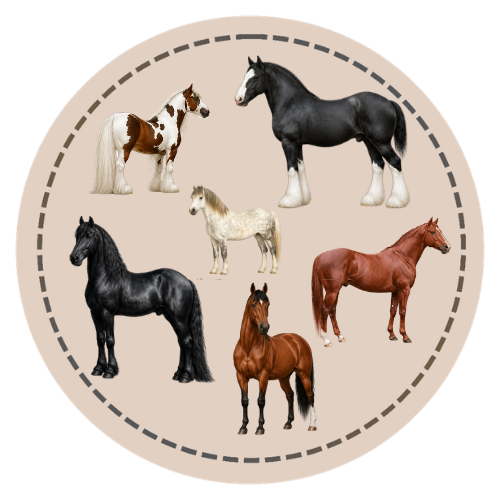
Common Breeds
Get introduced to the most common horse and pony breeds, their origins, characteristics, and typical uses.
From beginner foundations to advanced topics, join us as we create courses to help horse enthusiasts continue learning, exploring, and growing.

Get introduced to the most common horse and pony breeds, their origins, characteristics, and typical uses.

Compare common Western and English riding styles, why they developed, and what each discipline is designed to do.
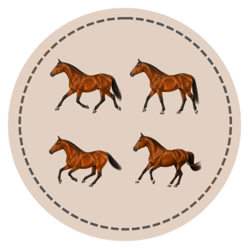
Learn the walk, trot, canter, and gallop — the beats, footfall patterns, and speed of each natural gait.
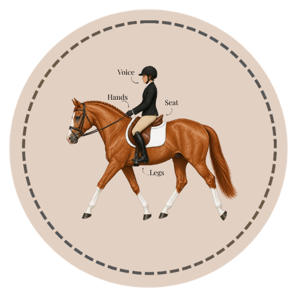
Understand how riders communicate through the seat, legs, hands, and voice, plus common artificial aids.
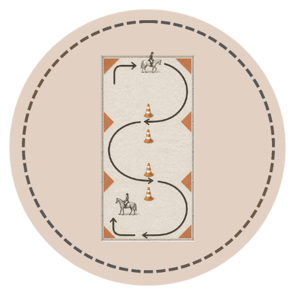
Learn circles, serpentines, diagonals, and other arena figures that build balanced, purposeful riding.
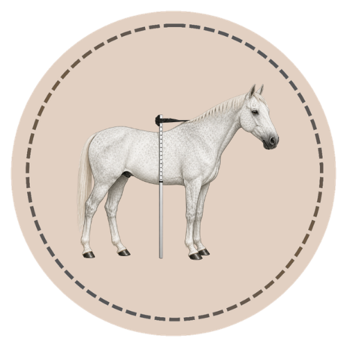
Learn how to use a measuring stick or tape to determine a horse's height in hands, and why accurate measurement matters.
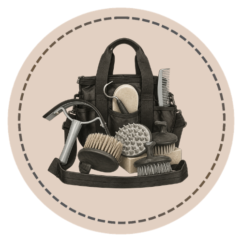
Discover the essential grooming tools, proper technique, and why routine grooming supports horse health and bonding.
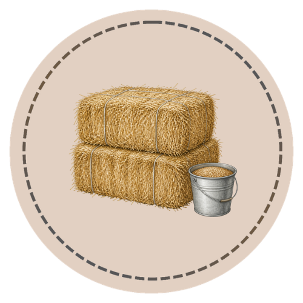
Understand the equine digestive system, forage types, feed programs, body condition scoring, and how to build a balanced feeding plan for any workload or life stage.
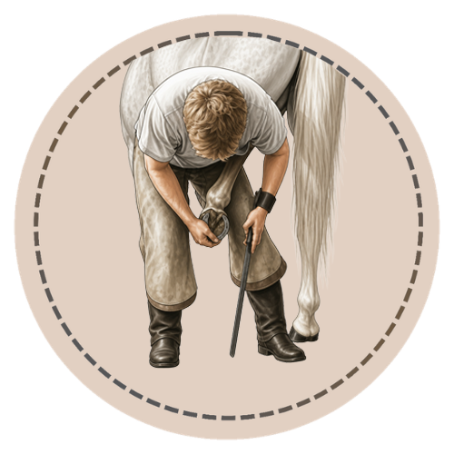
Learn the farriery cycle, barefoot vs. shod management, common hoof conditions like thrush and abscesses, and the horseperson’s daily role in hoof health.

Identify common horse coat colors and patterns including chestnut, bay, black, gray, palomino, buckskin, roans, pinto, and Appaloosa.

Learn stars, strips, snips, blazes, bald faces, and common face marking combinations.

Learn coronets, pasterns, socks, stockings, high stockings, ermine marks, and how to describe white leg markings.

Learn chestnut, black, and bay — the three base coat colors every horse color is built from.

Study blanket, leopard, snowflake, varnish roan, and other Appaloosa pattern expressions.

Compare tobiano, overo, tovero, splash white, sabino, frame overo, and named pinto looks.

Go beyond the foundation course with deeper anatomy study organized by region, structure, function, and real-world care context.
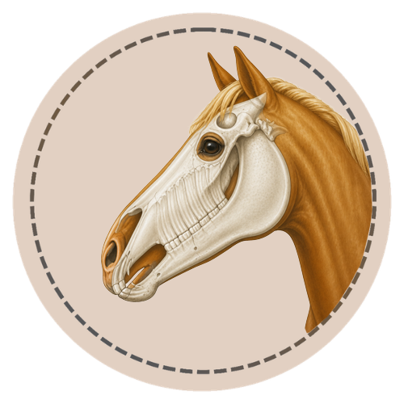
Explore the different kinds of equine teeth, how they change through a horse's life, and what healthy dental condition looks like.
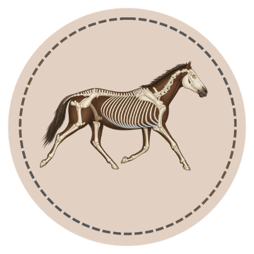
The horse's skeleton is the internal framework that supports the body, protects vital organs, and makes movement possible.

Learn the names and function of western saddles, bridles, bits, cinches, and common western discipline equipment.

Learn the names and function of English saddles, bridles, bits, stirrups, girths, and common English discipline equipment.

Learn the names and function of driving harnesses, bridles, lines, breeching, traces, and common driving styles.
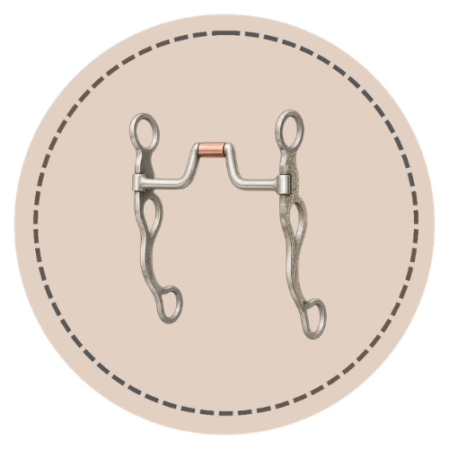
A bit is the primary tool of rein communication, and the bridle holds it in place. This course covers bit families, bridle types, and proper fit.

Learn to check and interpret temperature, pulse, respiration, and other key vital signs in horses.
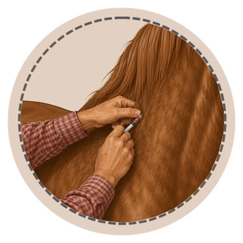
Build a complete preventive health program — vaccines, deworming, dental care, common conditions, and when to call the vet.
Learn how to recognize common injuries and emergencies, take basic vital signs, and use a horse first aid kit effectively.

Label the horse, sort body regions, and match anatomy terms.

Practice coat colors plus face and leg markings with hands-on games.
Label English, Western, and driving tack with randomized callouts.
Match disciplines and the jobs each horse and rider do.
Practice taking vital signs and reading what they mean.
Hands-on grooming, feeding, and care practice.
Printable parts-of-the-horse reference sheets and labeling worksheets.
Printable coat color, face, and leg marking worksheets and reference sheets.

Printable English and Western saddle and bridle labeling worksheets.

Printable riding discipline reference and matching worksheets.
Printable vital signs and first-aid reference sheets.
Printable grooming, feeding, and care worksheets.
No matching lessons found. Try another search term.
Equine Edu is built to grow with you - from your first horse terms to advanced genetics, physiology, and lameness science. Every course is structured, visual, and built for real learning.
Back to All Courses